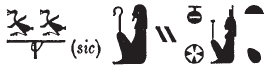

Column 2 (204-213)
Esna 204
- Location: Column 2
- Date: Probably Trajan
-
Hieroglyphic Text
- Bibliography: el-Sayed 1982, II, p. 639 Doc. 1036 (204, A); see also Tempeltexte 2.0
Awbn(.t) m Nwn
ʿnḫ.t ỉty.t
sḫḫ n tȝ ẖr wḏ=s
ỉỉ(.t) m wʿ
qmȝ.n=s ḥḥ.w
nn ky ḥr-ḫw=s
nn nṯr ʿrq m sšm=s
šsr(.t) sḫr.w
ḫp(r.t) m ḥȝ.t
ḥms(.t) ḥr ns.t=s
m tȝ-sn.t m tȝ-šmʿ
ʿḥʿ=s m nsw.t
n msw=s
ḥr wḏ-md.w n nṯr.w nṯry.t
ỉṯ(.t) mr=s
m ḫʿỉ ḥr srḫ=s
ḫʿỉ nb ẖr s.t-rȝ=s
N.t wr.t mw.t-nṯr
nb(.t) tȝ-sn.t
A She who arose from Nun,
the living-serpent, sovereign,
the breadth of the earth is under her command.
She who arrived as one,
and created millions;
there was no other, except her;
no god completed in her image.
She who conceives plans,
who came aboue in the beginning,
who sits upon her throne
in Esna in Upper Egypt.
She stands as king
for her child,
issuing commands to gods and goddesses.
She who takes the one she loves,
as the one who appears upon her serekh:
the Lord appears in glory under her authority.
Neith the great, Mother of God,
Lady of Esna.
BỈrỉ-tȝ twȝ bnw ḥr sȝ=f
nṯr ʿȝ m ḥw.t-ẖnmw
nwỉ r ndb.wt=f
nb sḫ.t m ỉfdw n hȝy.ty
ḥn(b).t=f r grb n tȝ
hyn=f n rsy r ȝb n wṯz.t
tȝš=f mḥty dỉ-mr.t
ỉmnty=f ỉs pẖr s.t-Rʿ
ỉȝbty=f rtḥ-snḥ.t ʿpr wbn Nw.t(??)
ẖnmw-Rʿ nb tȝ-sn.t
nṯr ʿȝ nb sḫ.t
B Irita, who carries the earth on his back.35
Great god in the Temple of Khnum,
who cares for his districts.
Lord of the Field in the four corners of heaven,
his measured land is the whole mapped earth.
His southern boundary is the East of the Sky,
his northern district is the Heaven,
his west is the circuit of the Throne of Re,
his east the (???) of Nut:36
Khnum-Re Lord of Esna,
Great God, Lord of the Field.
Esna 205
- Location: Column 2
- Date: Probably Trajan
-
Hieroglyphic Text
- Bibliography: None
Cartouches of Heka the child, with figures of Khnum, Wadjyt and Nekhbet.
Heka’s name is spelled:
 5 (ḥb + qnd)
5 (ḥb + qnd)
Esna 206
- Location: Column 2
- Date: Trajan
-
Hieroglyphic Text
- Bibliography: Sauneron 1962 pp. 253-270; Kurth 2016, pp. 227-231 (most recent translation with commentary); see also Tempeltexte 2.0
- NB: Sauneron divided this creation account into thematic sections. I have kept those here to facilitate comparison with the text edition.
Creation Account of Neith
§1. Title1nty-ʿ ỉr(.w)
m pr n N.t wr.t
mw.t-nṯr nb(.t) tȝ-sn.t
ỉr(.w)
m pr n N.t wr.t
mw.t-nṯr nb.t Zȝw
m ȝbd 3 šmw hrw 13
1 The ritual performed
in the Domain of Neith the Great,
Mother of God, Lady of Esna;
and also performed
in the Domain of Neith the Great,
Mother of God, Lady of Sais,
on III Shomu day 13 (= Epiphi 13 ).
ỉt ỉt.w
mw.t mw.wt
nṯr wʿ ḫp(r) m snw
wn=s m ḥry-ỉb Nwn
(ḥr) pr(.t) m ḥʿw=s
ỉs tȝ m kkw zmȝw
nỉ pr tȝ-Tnn
srwḏ ỉdb.w
The father of fathers,
mother of mothers,
sole god who became two:
she was within the Nun waters,
which came forth from her body,37
while the earth was in utter darkness,
and Tatenen had not yet come forth,38
he who makes the lands grow with plants.
ỉr.n=s ḫprw=s m ỉd.t
nt.t nn rḫ=s nṯr.w
m bw nb.w
wḥm.n=s ỉrw=s m ʿḥȝ
2šm=s ỉm=s
She made her manifestation as a cow,
unknowable by the gods
in any place.
She changed her form as a fish (Nile perch),
2 and she went as that.
sḥḏ.n=s stw.t nt ỉr.ty=s
ḫp(r) šzp
She lit up the rays of her eyes:
thus light came about.
ʿḥʿ.n ḏ(d).n=s
ḥȝ-n=(ỉ) bw pn
m zȝṯ m ḥry-ỉb Nwn
rhn.n=ỉ ḥr=f
bw pn wȝḥ=f
m zȝṯ m ḥry-ỉb Nwn
mỉ ḏd=s
ḫp(r) (tȝ)-sn.t
Zȝw pw
ʿpỉ.n=s ḥr ỉȝ.t tn
ḫp(r) Pr-nṯr
P pw
ḏ(d)=s
dp nḏm
m ỉȝ.t tn
ḫp(r) dp pw
ḫp(r) tȝ nḏm pw
m rn (n) Zȝw
Then she said:
‘Would that I had a place
as ground (zȝṯ) within Nun (Nwn)
on which I might repose!’
This place was laid down
as ground (zȝṯ) within Nun (Nwn),
just as she said;
thus came about Esna (zȝ-nw)
(that is also ‘Sais (Zȝw)’).
Then she flew (api) upon this mound,
thus came about Per-netjer (Pr-nṯr)
(that is also ‘Pe (P)’).
She said:
‘What a sweet (nḏm) taste (dp)
in this mound!’
Thus came about ‘Dep (Dp)’,
and thus came about ‘Ta-nedjem (tȝ-nḏm)’
as the name of Sais.
ỉs mȝṯ.n ỉb=s
ḫp(r)=sn ḥr-ʿ
3ʿḥʿ.n bȝq.n=s
m ỉȝ.t tn
ḫp(r) Bȝq.t m ỉhȝy
Whatever her mind conceived
materialized immediately:
3 Then she was radiant (bȝq)
in this mound;
thus Egypt (Bȝq.t) came about in joy.
qmȝ.n=s nṯr.w 30
ḏd=s rn.w
wʿ-wʿ.w
ḫp(r)=s m ỉḥy
m-ḫt mȝȝ=s w
ḏ(d)=w
dwȝ n=t
nb(.t) nṯr.w
mw.t=n
sḫp(r.t)=n
ỉr=t rn.w=n
nn rḫ=n s(n)
wḏʿ=t (n)=n
ʿn.t kkw
ỉr=t (n)=n tȝ
rhn=n ḥr=f
wp=t (n)=n grḥ r hrw
ȝḫ.wy pr.w nb.w
n ỉb=t
nt(t) wʿ(.t)
ḫp(r.t) m ḥȝ.t
zb(.t) nḥḥ
ḏ.t m ḥr=t
She created the 30 gods,39
and she said their names,
one by one.
Then she rejoiced
after she saw them.
They said:
’Praise to you,
Lady of the Gods,
our mother
who created us.
You made our names
which we didn’t know.
You removed for us
the period of darkness.
You made for us the earth
upon which we may rest.
You separate night from day for us.
‘How excellent is all that comes forth
from your heart!
You are the sole goddess,
who came about in the beginning,
who traverses cyclical-eternity,
while linear-eternity is before you.’40
4ʿḥʿ.n ḏd.n=s n ms.w=s
ỉmy sqȝ=n
m bw pn m tȝ
rhn=n ḥr=f
r dr wrḏ
ḫdỉ=n r bw pfy
sn.t
zȝṯ pw
tȝ m ḥry-ỉb Nwn
ỉȝ.t tn nḏm
snḏm=n ỉm=s
wȝḥ.n=s tȝ
m ḥry-ỉb Nwn
ỉr.n=s rn=f
m qȝw qȝ
4 Then she said to her children:
‘Come, let us go up
to this place on earth,
so we might rest upon it
to dispel (our) weariness.
Let us go north to this place,
Esna (Zȝ-nw),
(that means Sais (Zȝw)),
the land within Nun;
this sweet mound (nḏm),
in which we may dwell (snḏm).’
She established the land
within Nun,
and she made its name
‘The High Mound.’
ʿḥʿ.n ḏd=sn
n wr.t wsr.t
ỉ ḥnw.t ms.t=n
ỉ […] pr=n ỉm=s
šsr=t (n)=n
ỉw nỉ ḫp(r)=sn
m.t sw wʿ
5nỉ rḫ=n nty r ḫp(r)
ḏ(d).ỉn N.t
ỉw=ỉ r rdỉ(.t) rḫ=tn
nty r ḫp(r)
ỉmy ỉp=n ȝḫ 4
sbȝq=n ỉmy.w ẖ.t=n
šd=n tp-rȝ=n
rḫ=n s(t) nb mỉn
ỉr=sn ḏ(d)=s nb
wnw.t 8.t
ỉỉ(.t) m ʿnḏ
Then they said
to the Great and Mighty one:
’O Mistress, who bore us;
O [mother?] from whom we emerged:
‘May you foretell for us,
that which has not yet happened.
Behold, it is lonely here,
5 and we do not know what else will exist.’
Then Neith said:
‘I will let you know
what else will exist.
Come, let us reckon the 4 Akhu-powers,
illumine what is in our bodies,
and recite our utterances,
so we can discover it all today.’
They did all she said,
and 8 hours
passed in an instant.
ḥms pw ỉr.n ỉh.t
ḥr mȝṯ nty r ḫp(r)
ḏd=s
ỉw nṯr šps r ḫp(r) mỉn
wn.n=f ỉr.t=f
ḫp(r) ḥḏḏ.w(t)=f
ʿḫn.n=f s(t)
6ḫp(r) kkw
ḫp(r) rmṯ.w
m rmy.t n.t ỉr.t=f
nṯr.w m ntt n sp.ty=f
snḫt=ỉ sw m nḫt=ỉ
ȝḫ=ỉ sw m ȝḫ=ỉ
wsr=ỉ sw m wsr=ỉ
ỉw ms.w=f r (ẖȝ)k-ỉb r=f
sḫr(=ỉ) sn n=f
ḥwỉ(=ỉ) sn n=f
zȝ(=ỉ) pw
pr m ḥʿw=ỉ
ỉw=f r nb n tȝ pn ḏ.t
ỉw=ỉ ḥr mk.t=f
m-ẖnw ʿ.wy=ỉ
nn tkn ḏw nb 7ḥr=f
ḏd=ỉ n=tn rn=f m-ʿ(=ỉ)
Ḫprỉ m dwȝw
Ỉtm m mšr
ỉw=f m rdỉ(.w) ḫʿ=f r nḥḥ
m rn=f pfy n Rʿ
rʿ-nb
Then the ỉh.t-cow began
conceiving what would exist next.
She said:
’The august god shall come about today:
when he has opened his eye,
his bright rays will appear;
when he has closed it,
6 then there will be darkness.
’Humans (rmṯ.w) will come about
from the tears (rmy.t) of his eye.
Gods (nṯr.w) from the spittle (ntt) of his lips.
’I will strengthen him with my strength,
empower him with my power,
and make him mighty with my might.
’His children will rebel against him,
I will strike them down for him,
I will slay then for him,
for he is my son,
who came forth from me.
’I will be lord of this earth, forever.
I shall protect him
within my arms.
Nothing evil shall befall 7 him.
’I shall tell you his name from me:
Khepri in the morning,
Atum in the evening.
He is one allowed (rdỉ) to appear forever,
in this his name of Re (Rʿ),
every day.
ʿḥʿ.n ḏd.ỉn nṯr.w ỉp(n)
ḫm=n m nn sḏm=n
ḫp(r) Ḫmny.w
m rn n nn n nṯr.w
ḫp(r)=f m rn (n) nỉw.t tn
Then these gods said:
‘We didn’t know (ḫm.n) about what we just heard.’
Thus came about ‘the Ogdoad (Ḫmn.w)’
as the name of these gods,
and it became the name of this city (Hermopolis).
ʿḥʿ.n nṯr pn
m rḏw pr(.w) m ḥʿw=s
rdỉ.n=s
m-ẖnw ẖ.t n swḥ.t
sd.n=s Nwn
ḫpr.n Ḥʿpỉ
8r bw wʿ
hy n swḥ.t
ḥr sd n=f swḥ.t twy
wnn(.t) m swȝ.w
nṯr pn šps
sw m Rʿ
ỉmn.n=f sw m-ẖnw Nwn
m rn=f pfy n Ỉmn wr
ẖnmw nṯr.w nṯry.t
m st.wt=f
m rn=f pfy n ẖnmw
This god came to be
from the efflux of her (Neith’s) body,
which she placed
within the womb of an egg.
It (the egg) was broken by Nun,
having become a powerful flood (Hapi)
8 (concentrated) in a single place;
the husband of the egg,41
cracking this egg for him,
which was surrounding
this august god.
He is as Re,
and he hid (ỉmn) himself within Nun
in this his name of Amun (Ỉmn) the great.
Gods and goddesses were endowed (ẖnm)
with his rays,
in this his name of Khnum (ẖnmw).
ʿš mw.t=f ỉh.t
m qȝ n ḫrw=s
mỉ=n zp-snw
pȝy qmȝ[=ỉ]
mỉ=n zp-snw
pȝw msw=ỉ
mỉ=n zp-snw
9pȝw sḫp(r)=ỉ
ỉnk mw.t=k ỉh.t
ỉỉ.n nṯr pn
rȝ=f wn(.w)
ʿ.wy=f pgȝ.w
r nṯr.t tn
hdb.n=f sw m ḫḫ=s
nn pw ỉr.n zȝ
mȝȝ.n=f mw.t=f
ḫp(r) hrw pn
m ssw nfr tp rnp.t
ỉs rmy=f m Nwn
nỉ mȝȝ.n=f ỉh.t
ḫp(r) rmṯ.w
m rmy.t nt ỉr.t=f
sbṯ=f m-ḫt mȝȝ=f sy
ḫp(r) nṯr.w
m ntt n spt.y=f
His mother, the ỉh.t-cow called
at the top of her voice:
‘Come, come,
he whom [I] created!
Come, come,
he whom I bore!
Come, come,
9 he whom I produced!
I am your mother, the ỉh.t-cow!’
This god came,
his mouth open,
his arms spread wide
to this goddess.
He threw himself down on her bosom.
This is what a son did
when he saw his mother.
This day happened to be
the good day of the New Year.42
He cried (rmy) into the Nun waters,
when he saw the ỉh.t-cow,
so humans (rmṯ.w) came into existence
from the tears (rmy.t) of his eye.
He laughed after he saw her (again),
and thus gods (nṯr.w) came about
from the spittle (ntt) of his lips.
10nn n nṯr.w
ḫp(r) ḥtp=sn m kȝr=sn
ḏm=sn
ḫft mȝṯ=sn nṯr.t tn
šd=sn Rʿ m-ẖnw kȝr=sn
ỉr=sn ỉȝw n nṯr pn
ḏd=sn
ỉỉ.tw zp-snw
pȝ ỉwʿʿ n N.t
ỉr(.w) m ʿ.wy=s
qmȝ(.w) m ỉb=s
ỉw=k m nb n tȝ pn ḏ.t
mỉ nn sr.t.n mw.t=k
10 Now these gods
happen to dwell in their shrines;
they were pronounced
when this goddess conceived them.
They took care of Re within their shrines,
they make praise for this god,
saying:
’Welcome!
O heir of Neith,
made by her hands,
created by her heart.
‘You are lord of this earth forever,
just like what your mother predicted.’
ỉs ȝy dr.n=s 11npȝ
n zȝ=s
ỉr.n=s (sw) m Nwn
ḫp(r) ḥfȝw n mḥ 120
ḏ(d).t(w) n=f ʿȝpp
qmȝ ỉb=f sbỉ r Rʿ
ḥnʿ zmȝy.w=f
pr(.w) m ỉr.t=f
Moreover she removed 11 the umbilical cord
from her son,43
and she put it in the Nun waters.
Thus came about a snake of 120 cubits,
who is called Apophis.
His heart conceived rebellion against Re,
along with his associates,
who came forth from his (Re’s) eye.
Ḏḥwty pr(.w) m ỉb=f
ḫft dḥr=f
ḏd.tw n=f Ḏḥwty
mdw=f ḥnʿ ỉt=f
hb.n=f sw r sbỉ
m rn=f n nb mdw-nṯr
ḫp(r) Ḏḥwty nb Ḫmnw
m s.t tn
ḥnʿ Ḫmny.w n pȝwty tpy
Thoth emerged from his heart,
when he was upset (dḥr),
thus he is called ‘Thoth’ (Ḏḥwty).
He spoke (mdw) with his father,
who dispatched him against the rebel,
in his name of Lord of Divine Words (mdw-nṯr).
Thus Thoth Lord of Hermopolis
came about in this place,
with the Ogdoad of the first primeval moment.44
12N.t ḏd=s n zȝ=s
mỉ ḥnʿ=ỉ
r tȝ-zȝ-nw
zȝw pw
zȝṯw pfy
m ḥry-ỉb Nwn
dm=ỉ rn=k r nỉw.t=k
nn ȝb=ỉ n sḏm rn=k rʿ-nb
ȝṯt=ỉ tw
r wr pḥty=k
r sʿȝ snḏ=k
smȝ=ỉ n=k nn
wȝỉ.w ỉm=k
12 Neith says to her son (zȝ):
‘Come with me
to Esna (tȝ-zȝ-nw),
(that is also ’Sais (Zȝw)’),
this land (zȝṯw)
within the Nun waters (Nwn).
I shall pronounce your name like your city,
so I shall never stop hearing your name.45
I nurse you,
to magnify your strength,
and to increase fear of you;
I shall slaughter for you all those
who have plotted against you.
ỉs pr ḏȝỉs.w 7
m rȝ=s
ḫp(r)=sn m nṯr 7
ḫp(r) ḏd=s
m 13ḏȝỉs.w
m rn n mdw-nṯr r=f
m rn n Zȝw
ḫp(r) ḏȝỉs.w nw Mḥ.t-wr.t
wn=sn m zȝ n Mḥ.t-wr.t
r bw nb šm=s ỉm
ʿḥʿ.n ỉr.n=s ḫprw=s
m ỉh.t
ỉr.n=s Rʿ m wp.t=s
mḥỉ.n=s ẖr=f
ḏd.ỉn nṯr.w
Mḥ.t-wr.t dy
ḥnʿ zȝ=s
ḫp(r) Mḥ.t-wr.t pw
Now the seven utterances (ḏȝỉs.w)
came forth from her mouth,
and became 7 gods;46
thus what what she said came about
as 13 utterances (ḏȝỉs.w),
as the name of the hieroglyphs for it,
as the name of Sais.
Thus came about the 7 Djaisu (ḏȝỉs.w) of Mehet-weret.
They protect Mehet-weret,
in whichever place she goes.
Then she made her transformation
as an ỉh.t-cow,
she put Re on her horns,
and she floated (mḥỉ) with him.
The gods said:
‘The great floater (mḥ.t-wr.t) is here
with her son!’
Thus came about Mehet-weret (Mḥ.t-wr.t).
ʿḥʿ.n ỉr.n=s ʿḥʿ
ȝbd 4
m nỉw.wt šmʿ
14ḫnt-tȝ ḫr.tw r=f
ḥr sḫr sbỉ.w
ỉỉ(.w) r msḏ ḥm=s
sšp.tw tkȝ ḥȝ.t=s
m šmʿ-mḥw
Then she made a stop,
for four months,
in the cities of Upper Egypt,
14 it is called ‘Khent-ta’,47
striking down the rebels,
who had come to hate her Majesty.
One lights torches before her
in Upper and Lower Egypt.
ỉr spr=s r Zȝw m wḫȝ
m ȝbd 3 šmw hrw 13
ḥb pn nfr wr
m p.t m tȝ
m tȝ.wy nb.w
ʿḥʿ.n wḥm.n=s ḫprw=s
m wrr.t smȝ.n=s
pḏ.t=s m-ʿ=s
šsr=s m ḫfʿ=s
ḫnỉ=s (m) ḥw.t-N.t
15ḥnʿ zȝ=s Rʿ
Now when she reaches Sais at night,
on III Shomu day 13 (= Epiphi 18),
this very good festival,
in heaven, earth,
and in all lands.
Then she changed her manifestation,
as the Great One, when she made a massacre,
her bow in her hand,
her arrow(s) in her grasp,48
she alights (in) the Temple of Neith,
15 along with her son, Re.
ḏd.ỉn Rʿ
n nṯr.w nt(y.w) r-ḥnʿ=f
sšp (r)-ḥȝ.t N.t
m hrw pn
mỉ.w nhm.w n=s
m hrw pn nfr
ḏr ỉnỉ=s r ʿnḏ-wḏȝ
sṯỉ(.w) tkȝ.w (r)-ḥȝ.t=s
ỉr.w ḥb m-bȝḥ=s
r ḥḏ-tȝ
Then Re said
to the gods who were with him:
‘Make a light before Neith49
on this day!
Come, rejoice for her
on this good day,
since she returned safe and sound.
Light up torches before her,
and celebrate in her presence
until dawn!’50
Esna 207
- Location: Column 2
- Date: Trajan
-
Hieroglyphic Text
- Bibliography: Sauneron 1962 pp. 277-280, 295-302. See also Tempeltexte 2.0
15ȝbd 3 šmw sw 13
ʿq r ḥw.t-N.t
ỉr(.t) ʿȝb.t ʿȝ.t
m ỉḫt nb.w nfr
nỉs nty-ʿ
n ḫʿ n nṯr.t tn
sr wȝ.t
16ỉn sš-mḏȝ.w-nṯr
r wnw.t 3 pẖr(.w) m hrw
sḫʿ.n mw.t mw.wt
N.t wr.t
mw.t-nṯr
nb(.t) tȝ-sn.t
ḥnʿ psḏ.t=s
rmn pḏ.t (ẖr)-ḥȝ.t=s
ỉn ḥȝty-ʿ ʿȝ wr
tpy.w-ỉȝ.t=sn mỉt.t
ẖnm ỉtn=s
ḥtp m wsḫ.t ʿȝ.t
ḥtp n psḏ.t=s
ḥr wnm=s ỉȝb=s
ỉr.t ỉrw nb.w
n sḫʿ=s
ỉʿb.tw ḥtp.w-nṯr.w wr
m t t-ḥḏ bỉȝ
ḥnq.t ỉrp
17ỉḫt nb nfr
šdḥ bỉ.t ỉrṯ.t
dqr.w sm.w rnp.w
snṯr ḥr sḏ.t
ỉḥw ȝpd.w
ḥr [ḫȝ.wt] n ḥḏ nbw
kȝp ʿnty.w
m pr r-ḏr=f
m-ḫnt=f m-rwty=f
15 III Shomu 13 (= Epiphi 13)
Enter the temple of Neith,
perform a great composite offering,
of all good things.
Recite the ritual
of making this goddess appear,
and announce the path,
16 by the Scribe of the Divine Book,
until the third hour of the day has passed.
Procession of the Mother of Mothers,
Neith the Great,
Mother of God,
Lady of Esna,
along with her Ennead.
Carrying a bow before her,
by the Great, Chief Governor,
and the gods on standards likewise.51
Unite with her sundisk.
Rest in the Great Courtyard,
her Ennead stationed
on her right and left.
Perform every ritual
of carrying her in procession.
Assemble great divine offerings,
of bread, white bread, bỉȝ-cakes,
beer, wine,
16 all good things;
spiced wine, honey, milk,
fruits, vegetables, fresh plants,
incense upon the fire,
cattle and fowl
upon [altar]s of silver and gold.
Fumigate with incense
in the entire temple,
within it and outside it.
ỉr.t ḥnw
ỉr.t ỉḫt-nṯr
mỉ rʿ nb
ỉn wʿb ʿȝ m hrw=f
wn-ḥr
n nṯr-nỉwty
wn-ḥr
n nṯr.t tn
šd dwȝ.w m hrw pn
dwȝ dšr.t ḥḏ.t
swʿb psḏ.t
ḏsr pr pn
18r ḏr=f
ỉs ẖry-ḥb ḥry-tp
mnʿ.t n.t nbw
ṯḥn r ḫḫ=f
m ḥr n šfy.t
qn ṯȝy.w ḥr rmn=f
šw.t n nỉȝ m tp=f
(ḥr) ʿḥʿ m wbȝw
n ḫft-ḥr n nṯr.t tn
ỉw ḥr=f r mḥy.t
nỉs nty-ʿ n hrw pn
m ḫft-ḥr n nṯr.t tn
ỉr.t ỉrw nb.w n hrw pn
Perform the service,
perform the divine ritual,
just like eveyr day,
by a wab-priest, great in his day;
Revealing the face
of the city god (Khnum);
Revealing the face
pf this goddess (Neith);
recite hymns on this day,
hymn to the red and white crowns,
purify the Ennead,
sanctify this temple
18 in its entirety.
Meanwhile, the Chief Lector Priest
- having a golden menat,
and a faience amulet on his neck
with the face of a ram,
ceremonial bands on his shoulder,
and an ostrich plume on his head -
stands in the forecourt
of the pronaos of this goddess,
facing towards the north;
reciting the ritual of this day,
in the pronaos of this goddess;
perform all rites of this day.
ỉr m-ḫt tr n rwhȝ
ỉn.ḫr=tw 19ỉḥ.t km(.t)
ỉs pʿpʿ(.t)
r wsḫ.t-ḫʿ.w
ỉr.t ʿbw=s
m snṯr ḥr sḏ.t
sdm ỉr.t(y)=s
m wȝḏ msdm.t
wrḥ=s m mḏ
rdỉ(.t) šw.ty ḥr tp=s
wȝḏ n ṯḥn r ḫḫ=s
bs r ḏȝḏȝ.t tp(.t) Nwn
ḏd-mdw ỉn ẖry-ḥb ḥry-tp
ỉȝw n=t mw.t-nṯr nt Rʿ
qmȝ(.t) Ỉtm
mỉ nty r nty-ʿ
ḥnʿ dwȝ.w
Now after the time of evening,
one brings 19 a black cow -
brilliant, moreover, of coat -
to the Court of Appearances.
Perform her purification
with incense upon the fire;
decorate her eye(s)
with green powder and galena;
anoint her with ointment;
put a double-plumed crown on her head;
and a faience amulet on her neck.
Go forth to the tribune on the water.
Words spoken by the Chief Lector Priest:
‘Praise to you, Mother of Re,
who created Atum…’
according to the ritual papyrus,
as well as (other) hymns.
20ṯȝy pḏ.t n ỉsr
šsr 4
ỉn ḥȝty-ʿ ʿȝ wr
sṯỉ r rsy.t mḥy.t
ỉmnt.t ỉȝbt.t
ḏd-mdw
ỉnḏ ḥr=t
pḏ.t nt Rʿ
šmr(.t) nt Ỉtm
pḏ.t twy nn
m ʿ n N.t
šsr nty m ḫfʿ=s
ḥr mḏd n=s
ḫfty.w nbw n Rʿ ỉm
sḥtm=s sbỉ.w ḥr=s
21wdỉ=s šsr=s
ʿḏ=s
r ẖȝk.w-ỉb.w
hȝỉ šsr=s
r ḫfty.w nb.w n Rʿ
hȝỉ šsr=s
r ḫfty.w nb.w (pr-ʿȝ)|
m mwt m ʿnḫ
ntf Ỉtm
20 Carrying the tamarisk bow,
and four arrows,
by the Very Great Covernor.
Shooting to the south, north,
west, and east.
Words spoken:
Greetings,
bow of Re,
bow of Atum,
this bow here
is in the hand of Neith!
The arrow which is in her grasp
strikes for her
all enemies of Re.
She annihlitates her rebels,
21 whe launches her arrows,
and makes a slaughter
among the disaffected ones.
Her arrow descends
against all the enemies of Re!
Her arrow descends
against all the enemies of (Pharaoh)|,
dead or alive:
(for) he is Atum!
ỉ.rwḏ tw ṯz.t zp-snw rwḏ
nỉ wʿ=sn
r šsr=tn
sȝḫ=f tn
m B
sḫr=tn sw
ʿȝpp
sswn=tn sw
22spd wʿ=tn
nbs n sḏ.t
(r) ȝḫ.t nḥḥ
rs=tn ṯz(.t)
(r) ȝḫ.t nḥḥ
r sḫr ʿȝpp
m p.t m tȝ
m ḏȝḏȝ.t
n.t nṯr nṯr.t nb
mȝʿ-ḫrw Rʿ r ʿȝpp
zp 4
ỉ.sṯỉ r rsy.t
mỉ spd=k (m) p.t tȝ
dr=k ḫfty.w nb.w
nw Rʿ
m rsy.t mḥy.t mỉt.t
ỉmnt.t mỉt.t ỉȝbt.t mỉt.t
Be strong, team, be strong!
Not one of them shall escape(?)
from your arrows.
He shall make you excellent
against Be (Seth):
you will strike him down!
Apophis:
you will annihilate him!
22 May your harpoons be sharp,
and the fire burn,
(at) the Horizon of Eternity!52
Be on guard, team!
(at) the Horizon of Eternity!
in order to strike down Apophis,
in heaven and earth,
and in the council
of every god and goddess.
Re is justified against Apophis,
four times:
shoot (an arrow) to the south,
may you be sharp (in) heaven and earth,
and repel all the enemies
of Re,
in the south, likewise north,
likewise west, likewise east.
wḏȝ r pr=s m ḥtp
ḏd.ỉn ḥm.w-nṯr.w
hy zp-snw
ỉs ỉỉ.tw m nḏm-ỉb
23N.t ỉh.t wr.t
ỉỉ.tw m ḥtp
hy zp-snw
n ỉw=s
N.t wr.t
mw.t nṯr nb(.t) tȝ-sn.t
Mnḥy.t-Nb.t-ww
nb(.t) ḫnt-tȝ
ḫʿ.n nṯr.t tn
ḥnʿ psḏ.t=s
ḥtp ḥr s.t=s wr.t
sṯ(.t) tkȝ(.w) ʿšȝ.w
m-ẖnw pr pn
ỉr(.t) hrw nfr
ỉn ṯȝy.w ḥmw.wt
ỉr(.t) ỉhy
ỉn nỉw.t tn r-ḏr=s
ỉw nỉ ʿʿw.n z nb
r ḥḏ-tȝ
dỉ(.t) tȝ-sn.t m ḥb
Proceed to her temple in peace.
The priests say:
Hey, hey!
She has arrived in happiness.
23 Neith the great cow
has arrived in peace!
Hey, hey!
at her arrival.
Neith the great,
Mother of God, Lady of Esna;
Menhyt-Nebtu,
Lady of Khent-ta.
This goddess appears in procession
with her Ennead;
resting on her great throne;
lighting numerous torches53
within this temple;
performing holiday,
by men and women;
performing jubilation
bu the entire city,
without any person sleeping
until dawn;
placing Esna in festival.
Esna 208
- Location: Column 2
- Date: Trajan
-
Hieroglyphic Text
- Bibliography: Sauneron 1982, pp. 42-43, 78-79. See also Tempeltexte 2.0
NB: This litany is a continuation of Esna 217.
24 (…) r nb
24 (…) to be Lord.
n Wsỉr mȝʿ-ḫrw
nb mȝʿ.t
For Osiris, justified,
Lord of Maat.
n Wsỉr
twt ʿȝ m ȝbḏw
For Osiris,
great statue in Abydos.
n Wsỉr nb tȝ-sṯỉ
sṯỉ ḥʿpỉ r nw=f
For Osiris, Lord of Nubia,
who gushes the Inundation at its time.
n Wsỉr
bȝ ʿnḫ m ḥȝ.t-spȝ.wt
For Osiris,
Living Ba in Foremost of Nomes (Elephantine).
n Wsỉr
bȝ šps m ḥw-nty
For Osiris,
August Ba in ḥw-nty.54
n Wsỉr Gbty
ḫnty ḥw.t-nbw
For Osiris the Coptite,
foremost of the Gold House.
n Wsỉr Nfr-ḥtp
nb ḥw.t-sḫm.w
For Osiris-Neferhotep,
Lord of Hut-Sekhem (Diospolis Parva).
n Wsỉr
25m Wnw.t
For Osiris
25 in Hermopolis.
n Wsỉr
m Nʿrf
For Osiris
in Naref.
n Wsỉr
ỉty m tȝ-š
For Osiris,
Sovereign in the Fayum.
n Wsỉr
sn.t=f Ỉs.t m zȝ=f
For Osiris,
his sister Isis protects him.
n Wsỉr
Nb.t-ḥw.t m šms=f
For Osiris,
Nephthys is in his following.
n Wsỉr
zȝ=f Ḥr m nḏty=f
For Osiris,
his son Horus is his avenger.
n Wsỉr wḥm-ʿnḫ
ỉr ẖr.wt tȝ
For Osiris, wḥm-ʿnḫ flood,
who makes the food of the earth.
n Wsỉr
wsr pḥty
ṯȝy nṯr.w
For Osiris,
mighty of strength,
most masculine of the gods.
n Wsỉr
26mryty ḫnty spȝ.wt niw.wt
For Osiris,
26 Beloved within nomes and cities.
n Wsỉr
ỉty ḥqȝ ḫȝs.wt
For Osiris,
Sovereign, Ruler of foreign lands.
n Wsỉr nb qbḥ.wy
qbḥ.tw n kȝ=f
For Osiris, Lord of the Two Qebehu,
for whose Ka one offers cool water.
n Wsỉr nb iz.ty
sṯỉ.tw mw n kȝ=f
For Osiris, Lord of the Two Chapels,
for whose Ka one pours out water.
n Wsỉr nb ʿbȝ
ʿbȝ=f ʿb(.w) m ʿbȝ.w
For Osiris, Lord of Aba,
whose altar is equipped with offerings.
n Wsỉr
m rn(.w)=f nb.w
For Osiris,
in all his names.
n Wsỉr
m ỉrw=f nb(.w)
For Osiris,
in all his visible forms.
n Wsỉr
m sštȝ=f nb(.w)
For Osiris,
in all his secret forms.
27n Wsỉr
m s.wt=f nb.w
27 For Osiris,
in all of his thrones.
n Wsỉr
m bw.w nb.w mr kȝ=f ỉm
dỉ=sn ʿnḫ-ḏd-wȝs nb
snb ȝw.t(-ỉb) nb
n zȝ-Rʿ
(pr-ʿȝ)|
(dỉ(.w) ʿnḫ) mỉ-Rʿ ḏ.t
For Osiris,
in all places his heart desires.
May they give all ʿnḫ-ḏd-wȝs,
all health, all happiness,
to the Son of Re,
(Pharaoh)|
(given) life like Re, eternally!
Esna 209
- Location: Column 2
- Date: Trajan
-
Hieroglyphic Text
- Bibliography: Sauneron 1959, pp. 90-92; Sauneron 1982, p. 43. See also Tempeltexte 2.0
27ỉr(.t) p(ȝ) wdn n Ỉs.t
m hrw pn mỉ rʿ-nb
ḏd-mdw
27 Performing the litany of Isis
on this day like every day.
Words spoken:
(1) 
wdn n Ỉs.t wr.t
mw.t-nṯr nb(.t) tȝ-sn.t
ḥr-tp ʿnḫ-wḏȝ-snb
n nsw.t-bỉty
28 (tryns ḫwỉ)|
Offering for Isis55 the great,
Mother of God, Lady of Esna,
in addition to the life, prosperity, health
for the King of Upper and Lower Egypt
28 (Trajan Augustus)|
(2) 
n Ỉs.t wr.t
mw.t-nṯr nb(.t) tȝ-sn.t
ḫnt(.t) pr-nṯr
For Isis56 the great,
Mother of God, Lady of Esna,
foremost of Per-netjer.
(3)
n Ỉs.t wr.t
mw.t-nṯr nb(.t) ḥw.t-bȝ.w
ḫnt.t Ỉwny.t
For Isis the great,
Mother of God, Lady of Temple of the Bas,
foremost of Iunyt.
(4) 
n Ỉs.t wr.t
mw.t-nṯr ḥr.t s.t-wr.t
ḫnt(.t) pr-nṯr
For Isis the great,
Mother of God, upon the great throne,
foremost of Per-netjer.
(5)
Esna 210
- Location: Column 2
- Date: Domitian
-
Hieroglyphic Text
- Bibliography: el-Sayed 1982, II, pp. 621-622, Doc. 1003; see also Tempeltexte 2.0
Formula
1[…] ỉm=t
ḫntš ỉb=t n ptr=s
wr.t m Nḫn
tp.t m P
ḥnw.t m ỉtr.ty šmʿ-mḥw
2[…]
[…] n Mnḥy.t
sṯnỉ.tw ḥnʿ zȝ=s Rʿ
m nsw.t
ỉr.n=f wr.w ỉm=s r nṯr.w
nbw.t n nṯr.w
3[…]
[…] wbn ỉm=s
ẖnm=s ʿnḫ ḫr=t
ḫw=s ḥʿw=ṯ r ḏw nb
1 […] from you,
your hear rejoices from seeing it.
Great one in Nekhen,
First one in Pe,
Mistress in the chapels of Egypt
2 […]
[…] for Menhyt,
distinguished with her son, Re,
as the king,
and he became created than the gods from it.
Golden one of the gods,
3 […]
[…] shines within it,
it provides you with life,
and it protects your body from all evil.
The King
4 […] nrw
[…] wȝḏ.ty
5nṯr nfr
[…] m Nḫn
ms m Wȝḏ
[…]
[…] n nsw m šmʿ
bỉty m mḥw
ỉty nb ẖkr.w
Ḫr ḥwnw ḫnt mw.t=f
ȝṯt ḥr […]
bỉk ḥry srḫ
nb ḫʿ(.w)
([twmt]ns nty-[ḫwỉ])|
4 […] fear,
[…] the two uraei.
5 The good god,
[who was …] in Nekhen,
and born in Buto,
[…]
[…] of the King of Upper Egypt,
King of Lower Egypt,
Sovereign, lord of regalia,
Horus as a youth before his mother,
nursed upon […]
falcon atop the serekh,
Lord of appearance[s]
([Domit]ian Augu[stus])|
Neith
6[…] ʿḥ
wr.t ḫʿỉ nb
ẖr s.t-ḥr=s
nb(.t) nḥḥ ḥqȝ(.t) ḏ.t
ỉr(.t) p.t tȝ dwȝ.t
7dỉ=ỉ wḏ[=f mdw]
r tȝ.wy=k
šfy.t=k r-ʿ stw.t ỉtn
6 […] of the palace,
The Great one, the Lord appears in glory
under her authority,
Lady of eternity, Ruler of eternity,
who made heaven, earth, and the netherworld.
7 I allow [you] to issue [commands]
over your lands,
your prestige is as far as the rays of the sun.
Sobek
8ḏd-mdw n Sbk
[…]
[…] 9ḫḫ n N.t
[…]
10ḥnʿ mw.t=f
r ḥw.t-ỉt
nḏm s.t=f m ỉȝ.t-ṯȝ.wy
11dỉ=ỉ n=k rsy.t m ỉȝw
mḥy.t m ks
ỉmnty.t ỉȝbty.t m wȝḥ-tp
ỉṯ=k wrr.t ḫnt ʿnḫ.w
8 Words spoken by Sobek59
[…]
[…] 9 ‘throat of Neith’,60
[…]
10 with his mother
to the Temple of the Father,
his throne is pleasant within Mound of the Chicks.
11 I give you the south in praise,
the north in prostration,
the west and east bowing heads;
you seize the double crown, foremost of the living.
Behind the divinities
12nsw.t-bỉty
nb(.t) zȝw
ḏsr s.t m Ỉwny.t
šȝʿ(.t) ḫpr
ḫnt ḥw.t-ỉt
ḫp(r.t) m ḥȝ.t
[…]
[b]s(.t) ḥqȝ nb r ʿrry.t=s
nỉ hb ʿḥ m ḫm=s
N.t wr.t […]
12 The King of Upper and Lower Egypt,
Lady of Sais,
sacred of place in Iunyt,
she who began existince
within the Temple of the Father,
who came about in the beginning,
[…]
[who in]troduces every ruler to her portal,
nobody enters the palace without her knowing:
Neith the great […]
Esna 211
- Location: Column 2
- Date: Domitian
-
Hieroglyphic Text
- Bibliography: See Tempeltexte 2.0
Title
1[mn n=k…]
[…nw] tȝ r-ḏr=f
qȝy.(w)t […]
r dgȝ n 2ỉtn=k
ḫntš.w r-ʿ ḥp.ty
[…]=k
r s.t 3mr=k
mtr=ỉ n=k ḥnb.wt
m s.t-ỉb=k
ỉr[=k…]
m-ḫnt=s
1 [Receive …]
[…of] the entire earth,
high land(s) [and…]
as far as the sundisk 2 can see;
plots of land as far as the limits
[…] you/your
to the place 3 you love.
I measure the fields for you
in your favorite place,
may [you…]
within it.
The King
4nsw.t-bỉty
[nb] tȝ.wy
(ȝwtwkrtwr kysrs)|
5zȝ Rʿ
nb ḫʿ.w
(twmtyns nty ḫwỉ)|
6snn n [Šw?]
zȝ [smsw n?] ḥry-wḏb
7nṯr nfr
wȝḏḏ nfr
wȝḏ pr.t
wsr ḫpš
ʿšȝ wȝḥy.t
swr ḥtp.w
nw nb sḫ.t
sʿȝ ḏfȝ.w
n nb wȝḏwȝḏ
swsḫ tš n kȝ
n ỉmy-r’ ȝḥ.t
bʿḥ pr=f
m ỉḫt nb.w nfr
pr(.w) m ww=f
nb ḫnt[š.w]
([twmtyn]s nty-ḫwỉ)|
4 The King of Upper and Lower Egypt,
[Lord] of the Two Lands,
(Autokrator Caesar)|
5 Son of Re,
Lord of Appearances,
(Domitian Augustus)|
6 image of [Shu?],61
[eldest?] son of Chief of Agriculture.
7 The good god,
good wȝḏḏ-spirit,
verdant of seed,
mighty of strong arm,
numerous of grain.
He who magnifies offerings
of the Lord of the Field (Khnum);
who makes great provisions
for the Lord of Verdure,
who broadens the territory of the Ka,
of the Overseer of the Field62;
who inundates his temple
with all good things
which come forth from his agricultural domain.
Lord of plot[s of land],
([Domitian] Augustus)|
Khnum Lord of Esna
8ḏd-mdw n ẖnmw-Rʿ nb tȝ-sn.t
Šw zȝ Rʿ
nb sḫ.t
[…]
9ḥry ỉdb
n tȝ r-ḏr=f
nb ṯȝw
mḥy.t r-ḫt=f
nb ʿnḫ […]
10ỉwn […]
sr […]
11pr m qd
m sʿr r sḫ.t
r bʿḥ tȝ.wy […]
12qȝ šw.ty
tk[n] r ḥr.t
ḥry.t=f (ḥr) pẖr
m ḥr.w
13[dỉ=ỉ n=k …]
[…]
šnw n tȝ r-ȝw=f
8 Words spoken by Khnum-Re Lord of Esna,
Shu, son of Re,
Lord of the Field
[…]
9 Chief of Agriculture
for the entire earth.
Lord of air,
the north-wind follows him.
Lord of Life […]
10 pillar of air […]
ram […]
11 being ecstatic (lit. ‘out of body’),
while rising to the field,
in order to flood the two lands […]
12 tall of double plumes,
which reach up to the sky;
terror of him circulates
in all faces.
13 [I give you…]
[…]
the circuit of the entire earth.
Nebtu
14ḏd-mdw n Nb.t-ww
nb(.t) tȝ-sn.t
tfn.t zȝ.t Rʿ
nb(.t) sḫ.t
15sḫp(r.t) ỉḫt nb.w
šd.t šd.t m ỉḫt=s
ʿnḫ tȝ m 16r’-ʿ.wy=s
nb.t np(rỉ)
ʿšȝ wȝḥy.t
nb(.t) kȝ.w ḏfȝ.w
17dỉ=ỉ n=k ȝḫ.t
ȝḫ.tw r nw=s
šȝ.w nb.w (ḥr) ṯḥn
n kȝ=k
14 Words spoken by Nebtu,
Lady of Esna,
Tefnut, daughter of Re,
Lady of the Field,
15 who produces all things.
Nurturer, who nurtures with her food;
the earth lives from her handiwork.
Lady of wheat,
numerous of grain,
Lady of food and provisions.
17 I give you the excellent field,
made excellent at its time;
all plants shining
for your Ka.
Behind the Divinities
18nsw.t-bỉty
ḥry-ỉdb n šmʿ-mḥw
ỉmy-r’ ȝḥ.t
n psḏ m mḥn.t=f
mtr ḥnb.t
n zȝ.w-n=sn
nb sḫ.t
ḏdȝ ẖms.w
ỉr sm.w
r ṯz mn(mn).wt
sḫp(r) ḫ.t-n-ʿnḫ
n tpy.w tȝ
ẖnmw nb ww
ḫnty ww
18 The King of Upper and Lower Egypt,
Chief of Agriculture for all Egypt,
Overseer of the Field
for he who rises in his uraeus (Re),
who measures the plots of lands
for the Guardian Deities.
Lord of the Field,
who fattens wheat,
who makes plants
in order to raise livestock;
who produces ‘wood of life’
for those on earth:
Khnum Lord of the Agricultural District,
Foremost of the Agricultural District.
Esna 212
- Location: Column 2
- Date: Domitian
-
Hieroglyphic Text
- Bibliography: See Tempeltexte 2.0
A[…]
tmȝ.t ḥr.t[-tp]
[…]
ḫtỉ(.w) [ḥr] rn=s
[ḥȝ].t nṯr.w
pḥwy nty nb
ḏd.tw ḏ.t r ḫprw=s
wʿ.t m ʿḥ
štȝ.t m stp-zȝ
wsr.t nḏt.t n Ḥr
ỉr=s mḥn m tp zȝ=s
n wbn=f m Nwn
[…].n=s […]
ḏ.t nḥḥ
A […]
The Mother-urae[us]
[…]
inscribed [in] her name;
[firs]t of the gods,
the end of all that is:
her manifestation is called “eternity”.
Sole one in the palace,
mysterious serpent in the court;
Mighty, protector of Horus,
she serves as uraeus on her son’s head
when he rises from out of Nun;
she […]
for all eternity.
B[…]
nb ỉȝw.t ỉmỉ.tw psḏ.t
tȝ nb ḫtỉ ḥr rn=f
tỉs=f ḏ.t=f m šdy.w
wsḫ ḥnb.wt=f r ḥp.ty
ʿḥʿ ḥr ḫnty n [ḫnt]-tȝ
ḥr wp tȝš n nṯr nb
ḏd[.n]=f ỉr
ḫp(r.w) ḥr-ʿ
nn thỉ n šȝʿ.n=f
ʿḥʿy=f mn.tw
pr.t=f ṯz(.w)
nn sk=f ḏ.t nḥḥ
B […]
Lord of office among the Ennead,
every land is inscribed in his name;
he seats his body in the flooded lands,
and his fields are broader than the limits;
he who sits upon the edge of the earth,
assigning territory to every god.
That which he [has] said should be done,
it happens immediately,
what he has fated can not be interrupted.
His grain endures,
his seed has been bound,
without fail, for all eternity.
Esna 213
- Location: Column 2
- Date: Domitian
-
Hieroglyphic Text
- Bibliography: None
Minor inscriptions: cartouche of Domitian, name of Heka.